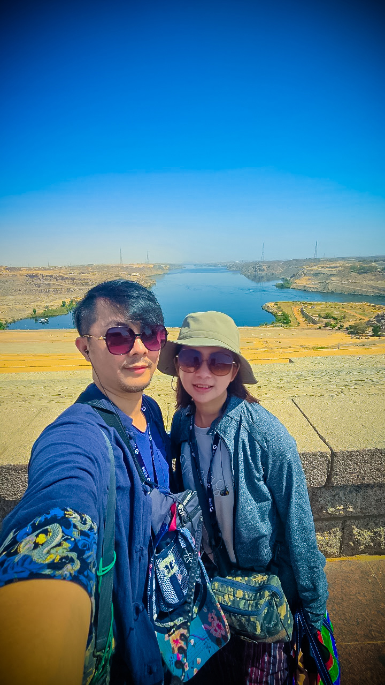
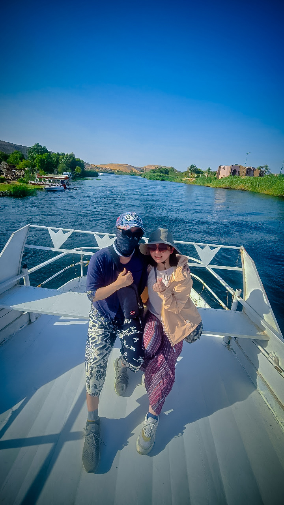
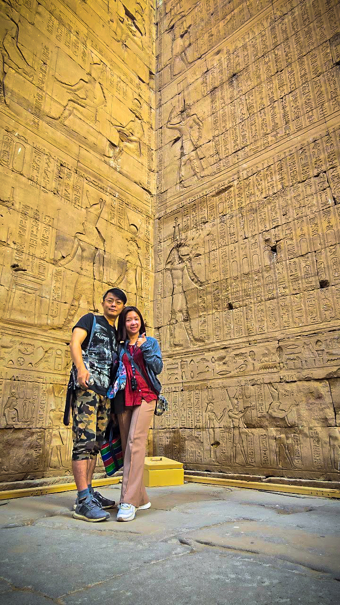
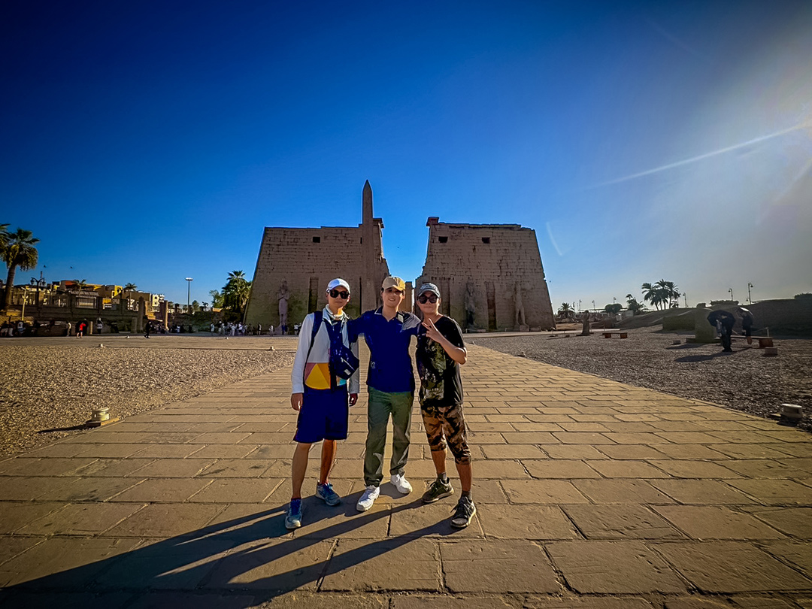
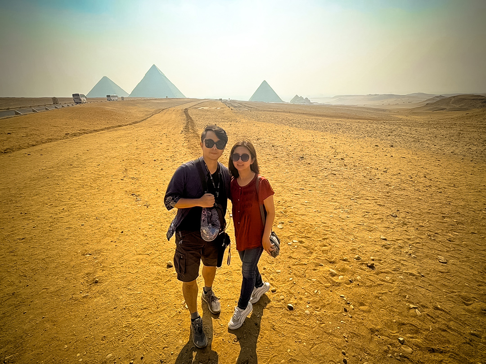
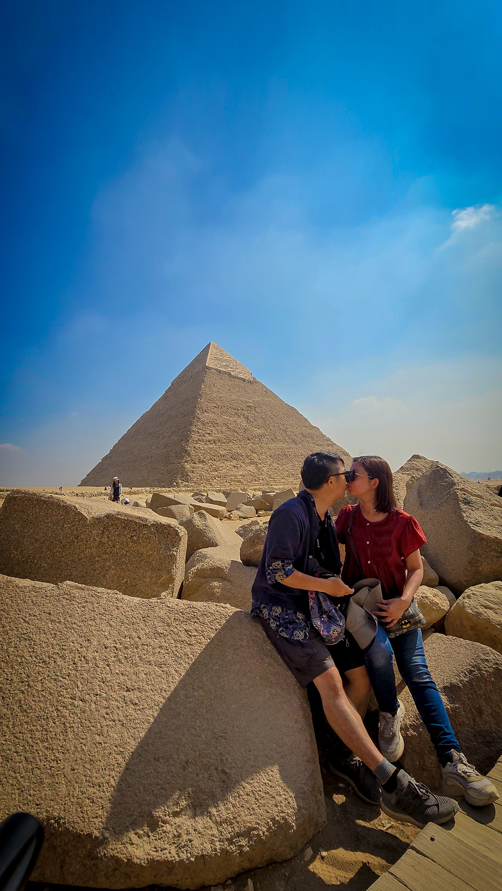

-
埃及蜜月之旅
埃及一直在我倆的口袋名單中，今年終於實現，踏上這個神秘古老又浪漫壯麗的國度。
在這裡，每一步都像走在課本裡的文明，每一眼都是畫冊中的鉅作。
從金字塔的雄偉到紅海的湛藍，從尼羅河的低語到市集的喧鬧，埃及用最鮮明的對比，讓人穿越古今，沉浸在跨越千年的文明之中！
千萬別以為只是來看沙子和石頭 XD。搭配導遊的解說，加上出發前先閱讀一些埃及的歷史與故事，會讓你更能投入情境，感受每一刻的震撼。
真心推薦喜歡旅行的人，一生至少要來埃及一次。
再來分享一些這趟旅程中關於食、衣、住、行的實用建議：
- 腸胃敏感的人，盡量避免生食（包含生菜水果），喝水務必選瓶裝水，冰塊也別加，因為不確定來源。
- 可以的話，行李先放幾瓶台灣的罐裝水，或小瓶裝的家裡開水，讓腸胃比較有安全感。
- 腸胃藥必備，止吐藥、止瀉藥最好隨身帶著，水土不服時至少能緩解。這次我們的團友很有愛，還會互相支援 XD
- 天氣真的很炎熱（夏天動輒 40 度以上），防曬一定要做好，穿著以輕透、吸汗為主。容易流汗的人，多帶幾件短袖和涼感巾。
- 帶電解粉或發泡錠泡水喝，補充鈉、鉀、鎂等電解質，能避免中暑、頭暈。建議「一瓶純水＋一瓶電解水」交替喝。記得只能用瓶裝水沖泡。
- 鞋子務必要好走，尤其沙地容易進沙，不合適的鞋會讓你舉步維艱 XD
- 住宿方面，夜宿火車比較不便（無法梳洗、廁所簡陋），但河輪和飯店基本上都很舒適。
- 埃及幾乎沒有便利商店，整趟行程只遇到兩三間。遇到就先買些補給吧（而且可以殺價）。
- 出門最好背胸前包，錢財和證件放胸前最安全。
- 每天出門前把小鈔零錢放口袋，剩下的大鈔收在隱密處（胸前包、外套內袋等），千萬不要整疊拿出來數。
- 購物時除非是國家級景點商店，其他地方都要貨比三家並勇敢殺價！折扣多少就看你膽量 XD
- 建議以現金為主，美金幾乎通用，換少量埃鎊即可（景點上廁所要付小費）。
- 信用卡不建議在當地店家刷，但還是要帶著，以備在機場或大型商場使用。
【特別留意】
- 埃及人很愛收小費。甚至騎駱駝時，駱駝主人會說「駱駝也要小費 XD」。若是跟團，多數小費導遊領隊已經事先付好。
- 在觀光區，常有人熱心幫拍照或帶路，事後可能會索取小費。如果不想給錢，可以準備 10～20 支便宜的原子筆，他們也很喜歡！
最後，埃及蜜月之旅雖已畫上句點，但那些金色沙丘與湛藍河流，將永遠在我們心中閃閃發光。
而當紅海的浪花退去，沙漠的風聲停下，我們才發現，真正留下的，除了回憶，還有一路相伴的牽手。
站在世界奇觀之前，只想摟著彼此記錄這一刻。
# 埃及 吉薩／金字塔群 Giza Pyramids
-
站在薩拉丁城堡的風口，看穆罕默德．阿里清真寺與老開羅在陽光裡層層疊疊。
# 埃及 開羅／薩拉丁城堡（穆罕默德．阿里清真寺視角） Cairo Citadel
-
玻璃穹頂下的仿方尖碑與拋光地磚，人潮來往，是城市的心跳。
# 埃及 開羅／拉美西斯車站（米斯爾站）主大廳 Cairo Ramses (Misr) Station – Main Hall
-
臥鋪車廂的小房間準備就緒，今晚跟著鐵軌一路向南。
# 埃及 國鐵臥鋪列車／開羅－阿斯旺 Watania Sleeper Train (ENR)
-
埃及國鐵臥鋪列車 # 埃及國鐵臥鋪列車
-
把行李靠牆收好，夜車啟程前先在艙內留個合照。
# 埃及 國鐵臥鋪列車／開羅－阿斯旺 Watania Sleeper Train (ENR)
-
站在長堤邊看去，藍得不真實的納賽爾湖延向地平線。
# 埃及 阿斯旺／阿斯旺高壩（納賽爾湖側觀景點） Aswan High Dam – Lake Nasser View
-

回望尼羅河一側，壩體把河水與沙漠切成兩個世界。
# 埃及 阿斯旺／阿斯旺高壩（尼羅河側觀景點） Aswan High Dam – Nile Side
-
巨大的蓮花造型直指藍天，見證那段合作建壩的年代。
# 埃及 阿斯旺／埃及－蘇聯友誼紀念塔（蓮花塔） Aswan–Soviet Friendship Monument
-
傍晚搭上風帆船，城市被金色餘暉輕輕包住。
# 埃及 阿斯旺／尼羅河．阿斯旺濱河大道一帶（科爾尼什） Felucca on the Nile, Aswan Corniche
-
風帆擦過西岸沙丘，遠處阿迦汗陵靜靜坐在山脊上。
# 埃及 阿斯旺／尼羅河西岸－阿迦汗陵景 Aga Khan Mausoleum View from Felucca
-

換成機動小船遊河，兩岸的綠意與努比亞村落一路相迎。
# 埃及 阿斯旺／尼羅河（象島與西岸之間；往努比亞村航段） Motorboat on the Nile – Elephantine ↔ West Bank (Gharb Seheil)
-
尼羅河畔的努比亞村 # 尼羅河畔的努比亞村
-
跨上駱駝沿著沙脊慢慢前行，尼羅河在身後閃著藍光。
# 埃及 阿斯旺／西岸沙丘．駱駝行（往聖西緬修道院方向） Aswan West Bank Desert – Camel Ride to St. Simeon Monastery
-
並騎駱駝停在沙坡前，遠處是西岸的岩丘與村落。
# 埃及 阿斯旺／西岸沙丘．駱駝行 Aswan West Bank Desert – Camel Ride
-
夕陽落在沙海上，影子被拉得好長好長。
# 埃及 阿斯旺／西岸沙丘．駱駝行（黃昏） Aswan West Bank Desert – Camel Ride at Sunset
-
FB 撰寫日期:2025.08.02
第一次在河輪上過夜，獻給了神秘浪漫的尼羅河。
風很輕，景很美，情更重 。
想起導遊在艾德芙神殿拉著我和小妹充當歐西里斯與伊西斯，並講述他們之間的愛情故事。
他們的愛不是轟轟烈烈，是穩定如河，堅定如神，跨越了生死。
坐在河輪上看著河景，仿佛聽見了四千年前的誓言，時間也仿佛回到三十年前最初的起點，說著我們實現當年憧憬環遊世界的夢想，肯定彼此在追求夢想與實現承諾所付出的努力。
感覺讓尼羅河見證我們的愛情也蠻有意義的😁
而坐在陽台不止談愛情，還談健康，談教育，談未來，談人生。
最後在提醒彼此「保健食品吃了沒」中結束，進到房間一人倒水一人去拿食品，感情隨著氣溫破40度而升溫，默契也依舊如昔。#穩定如河堅定如神
#這是三十年前就說好的約定啊
#我想不到比一同老去還要更浪漫的事
# 埃及 國鐵臥鋪列車／開羅－阿斯旺 Watania Sleeper Train (ENR)
-
大神殿最深處四尊神像靜坐，等著年年日照穿透的那一刻。
# 埃及 阿布辛貝／拉美西斯二世大神殿．內殿 Abu Simbel – Great Temple Sanctuary
-
奧西里斯柱林立的前殿，壁上的戰功與祭禮仍在訴說。
# 埃及 阿布辛貝／拉美西斯二世大神殿．柱廳 Abu Simbel – Great Temple Hypostyle Hall
-
四座巨像鎮守沙崖，拉美西斯二世的目光越過千年。
# 埃及 阿布辛貝／拉美西斯二世大神殿（外觀） Abu Simbel – Great Temple Façade
-
六尊立像迎面排開，這座小神殿獻給奈菲爾塔利與哈索爾。
# 埃及 阿布辛貝／奈菲爾塔利小神殿（外觀） Abu Simbel – Temple of Hathor & Nefertari Façade
-

燈光掃過壁面，神祇與象形文字在岩壁上重新發亮。
# 埃及 阿布辛貝／奈菲爾塔利小神殿（內部浮雕） Abu Simbel – Small Temple Interior Reliefs
-
雙神共享一座聖所，河畔的科姆翁布在夕陽下更顯莊嚴。
# 埃及 科姆翁布／科姆翁布神廟（前院與柱廳） Temple of Kom Ombo – Forecourt & Halls
-
穿過刻滿圖像的柱廊，金色餘暉把砂岩染成蜂蜜色。
# 埃及 科姆翁布／科姆翁布神廟（柱廊深處） Temple of Kom Ombo – Colonnade
-
走進卡納克神廟的列柱殿，像闖入一片石頭的森林，光影在象形文字間流動，三千年前的故事被刻在每一道柱身與檐樑。
# 埃及 盧克索／卡納克神廟・列柱殿 Karnak Temple – Great Hypostyle Hall
-
站在柱影之中，才懂為什麼人們說卡納克是「石刻的時間」。
# 埃及 盧克索／卡納克神廟・列柱殿 Karnak Temple – Great Hypostyle Hall
-
神廟迴廊外牆的長卷浮雕，像一幅沒有句點的史詩。
# 埃及 盧克索／卡納克神廟 Karnak Temple Complex
-
方尖碑直插藍天，古王朝把權力與信仰都刻到碑尖上，與三五團友記錄這一刻。
# 埃及 盧克索／卡納克神廟・方尖碑區 Karnak Temple – Obelisks
-
繞著方尖碑走一圈，碑座、碑身到碑尖，每一段都是時間的剖面。
# 埃及 盧克索／卡納克神廟・方尖碑區 Karnak Temple – Obelisks
-
黃昏鋪滿神廟的石板，卡納克最美的時刻是日落前的金光。
# 埃及 盧克索／卡納克神廟 Karnak Temple (sunset courtyard)
-
站在第二層平台，背後是整齊排列的神像與峽谷的風，每一步都像走進歷史課本裡的插圖，卻比課本更有溫度。
# 埃及 盧克索／哈特謝普蘇特女王葬祭殿 Mortuary Temple of Hatshepsut, Deir el-Bahari
-
殿內的巨像夾道而立，女王的氣場鋪滿整個廊道，御用攝影師幫大家拍一張留念。
# 埃及 盧克索／哈特謝普蘇特女王葬祭殿 Mortuary Temple of Hatshepsut
-
第三層平台的神像列隊，帽冠與姿態在日光下格外有秩序。
# 埃及 盧克索／哈特謝普蘇特女王葬祭殿 Mortuary Temple of Hatshepsut
-
石柱、砂岩與美人排成一張合照，女王的殿堂當了最沉穩的背景。
# 埃及 盧克索／哈特謝普蘇特女王葬祭殿 Mortuary Temple of Hatshepsut
- 
在荷魯斯神殿的石壁前，牆面滿是深刻的象形文字與神祇浮雕，感覺每一道刻痕都在講古埃及的故事。
# 埃及 艾德夫／荷魯斯神殿 Temple of Horus, Edfu
-
巨牆在轉角相遇，光照乾淨利落，像把時空切成兩半。
# 埃及 艾德夫／荷魯斯神殿 Temple of Horus, Edfu
-
第一重塔門上的勝利圖像清晰可見，石砌的威嚴近距離更震撼。
# 埃及 艾德夫／荷魯斯神殿 Temple of Horus, Edfu
-
河輪進入伊斯納船閘，尼羅河像被切成兩段，水面安靜上升。
# 埃及 盧克索以南／伊斯納船閘 Esna Lock
-
在埃及變成別人眼中的幽靈馬車 # 在埃及變成別人眼中的幽靈馬車
-
盧克索神殿的石柱像樹幹一般粗壯，抬頭是永遠看不完的浮雕與橫樑。
# 埃及 盧克索／盧克索神殿 Luxor Temple
-
這一刻不需要語言，只剩快門聲與呼吸聲。
# 埃及 盧克索／盧克索神殿 Luxor Temple
-
安蒙霍特普三世的列柱大道筆直延伸，像一條石做的時間走廊。
# 埃及 盧克索／盧克索神殿 Luxor Temple
-
每一步都是石頭交響曲裡的節拍。
# 埃及 盧克索／盧克索神殿 Luxor Temple
-
在孟農巨像前合影，萬年回首，寂靜如常。
# 埃及 盧克索西岸／孟農巨像 Colossi of Memnon
-
帝王谷的入口區域寬闊簡潔，像在為地下的王者們留白。
# 埃及 盧克索西岸／帝王谷 Valley of the Kings（入口區）
-
沿著斜坡往地底走，壁面滿是神祇與王名，彷彿能聽見工匠的刻鑿聲在象形文字之間穿行，走進拉美西斯五／六世的長廊，時間被安靜地封存。
# 埃及 盧克索西岸／帝王谷 KV9：拉美西斯五／六世之墓 (Valley of the Kings)
-
王墓入口小小一扇門，通往三千年前的地下宮殿，記錄探險前的一刻。
# 埃及 盧克索西岸／帝王谷 KV9：拉美西斯五／六世之墓 (Valley of the Kings)
-
穿梭柱廊之間，感覺自己只是時間長河裡的一個小旅行者。
# 埃及 盧克索東岸／盧克索神殿 Luxor Temple
-
守門的法老立站在身後守護著我倆。
# 埃及 盧克索東岸／盧克索神殿 Luxor Temple
-
單座方尖碑與巨型門塔同框，盧克索的名片近在眼前。
# 埃及 盧克索東岸／盧克索神殿（前方尖碑與第一塔門）Luxor Temple
- 
把整座神殿當背景，團友當前景，史詩與日常同框。
# 埃及 盧克索東岸／盧克索神殿（前廣場）Luxor Temple
-
旅行最好的紀念品，是在遺跡前的友情與笑聲。
# 埃及 盧克索東岸／盧克索神殿（第一塔門）Luxor Temple
-
神殿外延伸的是斯芬克斯大道，兩側的石像排排站。
# 埃及 盧克索東岸／斯芬克斯大道 Avenue of Sphinxes
-
黃沙像海浪，山脈像礁石，我在東方沙漠的風裡眺望紅海的方向。
# 埃及 紅海州／東方沙漠 Eastern Desert（往紅海方向）
-
和超熱情導遊哈比比在頂端合影，腳下是起伏的金色波浪，回頭望見四驅車像小點，東部沙漠的層層山脈鋪到天邊。
# 埃及 赫爾格達／東部沙漠 Hurghada Eastern Desert
-
埃及沙哈拉沙漠滾沙 # 埃及沙哈拉沙漠滾沙
-
車輪停下來，天與地只剩藍與金兩種顏色。
# 埃及 赫爾格達／沙漠越野 Desert Safari
-
站上車頂看無邊沙丘，藍天近得像觸得到，腳下全是被時間梳過的沙紋。
# 埃及 赫爾格達／沙漠越野 Desert Safari
-
旅伴小隊沙丘集合，一字排開把沙脊當伸展台，把笑容交給太陽，讓風替我們按下快門。
# 埃及 赫爾格達／東部沙漠 Hurghada Eastern Desert
-
坐在溫熱的沙上，感受這沙世界的廣闊胸襟。
# 埃及 赫爾格達／東部沙漠 Hurghada Eastern Desert
-
旅程的戀愛配方：陽光、微風、金沙與小妹。
# 埃及 赫爾格達／東部沙漠 Hurghada Eastern Desert
-
山與沙交錯，望見金色沙海無邊無際，像一張被風畫出的地圖。
# 埃及 赫爾格達／東部沙漠 Hurghada Eastern Desert
-
高高坐在車頂的專屬觀景台，坐著把整片沙海收進眼底。
# 埃及 赫爾格達／東部沙漠 Hurghada Eastern Desert
-
埃及沙哈拉沙漠飆沙 # 埃及沙哈拉沙漠飆沙
-
沙地上兩個影子一高一矮，屬於牽駱駝的女孩與旅人。
# 埃及 赫爾格達／貝都因村 Bedouin Village
-
騎在駱駝上向天空比愛心，襯著一望無際的金色沙海。
# 埃及 紅海／東部沙漠 Eastern Desert
-
下駱駝要經歷兩段式震盪!! 一定要注意安全。
# 埃及 紅海／東部沙漠 Eastern Desert
-
駱駝步伐悠閒，心情也跟著悠閒~
# 埃及 紅海／東部沙漠 Eastern Desert
-
群山當背景，我們當主角，畫面拍的剛剛好。
# 埃及 紅海／東部沙漠 Eastern Desert
-
友情沙漠小隊合照，彼此的熱情比太陽還濃烈。
# 埃及 紅海／東部沙漠 Eastern Desert
-
沙漠追沙~馳騁沙場，非常刺激!
# 埃及 紅海／沙漠越野 Desert Safari
-
紅海清得像玻璃，美的不像話。
# 埃及 紅海／赫爾格達 Hurghada
-
這麼美的紅海，摩西怎麼捨得劈開XD
# 埃及 紅海／赫爾格達 Hurghada
-
她望向遠處的浪，我望向她的望向。
# 埃及 紅海／赫爾格達 Hurghada
-
這趟埃及旅程我倆都深感值得!!
# 埃及 紅海／赫爾格達 Hurghada
-
紅海美到發光，走在長長木棧道上，回頭一拍。
# 埃及 赫爾格達／紅海棧橋 Hurghada Red Sea Jetty
-
穿過沙灘入口的星形拱門，眼前就是閃到睜不開的紅海藍。
# 埃及 赫爾格達／紅海海灘入口 Hurghada Beach – Red Sea
-
在炎熱的埃及山谷中，和團友們一同搭車避暑，也是一種幸福。
# 埃及 盧克索／帝王谷 Valley of the Kings Shuttle
-
終於看到金字塔，雖然還有點距離，依然感覺震撼!
# 埃及 吉薩／金字塔群 Giza Pyramids
-
近距離仰望，石塊像階梯直通天空，不自覺把自己當成男女主角XD
# 埃及 吉薩／胡夫金字塔 Great Pyramid of Khufu
-
好像進入電影場景~像不像電影劇照!!
# 埃及 吉薩／胡夫金字塔 Great Pyramid of Khufu
-
結果親的像搞笑劇 ^^''
# 埃及 吉薩／胡夫金字塔 Great Pyramid of Khufu
-
遠眺兩座金字塔與人面獅身像。
# 埃及 吉薩／胡夫金字塔 Great Pyramid of Khufu
-
金字塔太好拍~拍不停!
# 埃及 吉薩／金字塔群 Giza Pyramids
-
星爺式的招牌動作XD
# 埃及 吉薩／金字塔群 Giza Pyramids
- 
三座金字塔靜靜排在地平線，我們站在萬年之前。
# 埃及 吉薩／金字塔群 Giza Pyramids
-
比賽誰跳得比金字塔高 :)
# 埃及 吉薩／金字塔群 Giza Pyramids
-
展開雙臂做飛機，沿著古老的軸線起飛。
# 埃及 吉薩／金字塔群 Giza Pyramids
-
雙手高舉，外星人來點 Sign 吧!!
# 埃及 吉薩／金字塔群 Giza Pyramids
-
旅伴再次集結！在金字塔前留下一張到此一遊。
# 埃及 吉薩／金字塔群 Giza Pyramids
-
換個角度再合照，每一塊岩石與每一個人都有一段自己的故事。
# 埃及 吉薩／金字塔群 Giza Pyramids
- 
坐在巨石上親一口，把浪漫寫進古文明。
# 埃及 吉薩／金字塔群 Giza Pyramids
-
這次變身成開羅郭富城 XD
# 埃及 吉薩／金字塔群 Giza Pyramids
-
烈日當空，沙塵作陪，獅身人面像與金字塔在對話。
# 埃及 吉薩／金字塔群 Giza Pyramids
-
站在古文明的門口，旅行的默契也一起被定格。
# 埃及 吉薩／金字塔群 & 獅身人面像 Giza Pyramids & Sphinx
-
熱風撩起衣角，身後是歷史，身旁是你。
# 埃及 吉薩／獅身人面像 Great Sphinx of Giza
-
走到欄鏈邊緣，感覺每一步都踩在課本裡。
# 埃及 吉薩／獅身人面像 Great Sphinx of Giza
-
張開手擁抱市集的絢爛，一步踏進萬種色彩與金屬光澤。
# 埃及 開羅／汗哈利里市集 Khan el-Khalili

雕花拱門下的老市集，好像走進一頁金色的阿拉伯童話。
# 埃及 開羅／汗哈利里市集 Khan el-Khalili
-
午後的街巷人聲鼎沸，咖啡香和陽光在空氣裡打轉。
# 埃及 開羅／舊城街區 Old Cairo Street
-
城市屋頂遠眺三座金字塔，沙色與磚紅把地平線切成兩半。
# 埃及 吉薩／屋頂遠眺金字塔 Skyline View of Pyramids
-
餐廳老闆的女兒們在二樓不停微笑招手~難不成我也是埃及人的菜XD
# 埃及 吉薩／飯店前 Grand Hotel
-
我們的隨車警察讓女團友們為之瘋狂。
# 埃及 開羅／街頭相遇 Street Moments
-
哈比比就像一本隨身的歷史課本，讓這趟旅程的在地人文與古文明脈絡一章章在眼前展開。謝謝你的細心陪伴與解說，讓我們收穫滿滿、滿載而歸。
# 埃及 開羅／埃及博物館 The Egyptian Museum